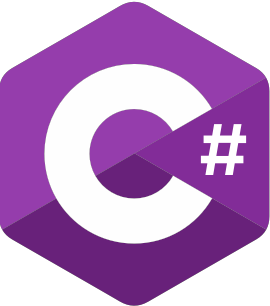

Hello!
class Nikhil_Ranjan (Human, AI_ML_Skills, Analyst, Developer, Statistics, Web3):
About Me
Passionately dedicated to AI and ML, I hold an MSc in Artificial Intelligence from the University of Georgia.
I also have 2 years of AI research and development.
My journey spans diverse areas - from refining stock predictions through stacked ensembling, to leveraging web3 data for fraud detection, and conducting NLP-driven analyses of social media bot impacts.
I've applied Deep Learning to asset forecasting, sentiment analysis, and time series data, along with using advanced statistical analysis.
I have also held Leadership roles in student organizations at Manipal University and the University of Georgia which has helped my ability to work with people.
I am eager to contribute my expertise to shape innovations.
I can utilize Python, R, Tableau, C#, JavaScript, SQL, HTML5 & CSS3
for
AI, data analysis, visualization, and web development.
I am committed to making meaningful contributions to the field of AI and ML
by
leveraging my strong academic background and technical skills to drive
innovation and solve complex problems.

Skills
|
|
NumPy, Scikit-learn, TensorFlow, PyTorch, Pandas, Matplotlib, Keras, Jupyter Notebooks, NetworkX, Dask, NLTK, NLP, spaCy, joblib, multiprocessing pool etc. |
| Experience in working with various Deep Learning and statistical based learning algorithms. | |
| Machine Learning and Deep Learning in Python. Deploying ML models to Azure and GCP. | |
|
|
ggplot, Tidyverse, Rvest, RMySQL |
| SQL | MS-SQL, Oracle, MySQL |
|
|
Experience with data processing and filtering in Python, MATLAB, and Microsoft Excel. |
|  C# | Full Stack Web Dev on .NET (HTML, CSS, JavaScript, C#, SQL). |
Professional Experience
|
Research Assistant University of Georgia (May 2021 - Nov 2021) & (Aug 2022 - Aug 2023) |
|
|
Software Engineer CenturyLink® (Now Lumen®) August 2018 - Jan 2020 |
|
|
Summer Intern Manipal College of Pharmaceutical Sciences Summer 2017 |
|
| Company | Position | Duration | Responsibilities/Achievements |
|---|---|---|---|
| University of Georgia | Research Assistant | Aug 2022 - July 2023 |
|
| CenturyLink® (Now Lumen®) | Software Engineer | August 2018 - Jan 2020 |
|
| Manipal College of Pharmaceutical Sciences | Summer Intern | Summer 2017 |
|
Research Experience
| Research Topic / Project | Duration | Description / Responsibilities / Achievements |
|---|---|---|
|
Masters Research Project |
|
|
Jun 2021 - December 2021 |
|
|
B. Tech Research Project |
|
| Research Topic / Project | Description / Responsibilities / Achievements |
|---|---|
|
|
|
|
|
|
Certifications & Achievements
- ✓ CE&QIP Course in Machine Learning and AI - Indian Institute of Technology, Bombay - Aug 2020.
- ✓ Machine Learning for Business - DataCamp - Apr 2021.
- ✓ Time Series Analysis in R - DataCamp - Apr 2021.
- ✓ Data science using Python - Indian Institute of Technology, Roorkee - Aug 2020.
- ✓ Introduction to Programming Using Python - Microsoft Technology Associate Certification - Feb 2020.
- ✓ Cloud Fundamentals - Microsoft Technology Associate Certification - June 2016.
- ✓ Security Fundamentals - Microsoft Technology Associate Certification - Nov 2019.
- ✓ Introduction to Statistics in R - DataCamp - Mar 2021.
- ✓ 2nd position in a paper presentation competition at BITS Goa for a possible implementation of a Spherical Drive System - Mar 2019.
Contact Information
Email: Nikhil_97 [@] hotmail [dot] com
Languages Known: English,Hindi